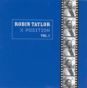

| Artist: | Robin Taylor |
| Title: | X Position Vol. 1 |
| Label: | Marvel of Beauty MOBCD 012 |
| Length(s): | 50 minutes |
| Year(s) of release: | 2005 |
| Month of review: | [11/2005] |
| 1) | Black Country Ruffle | 7.58 |
| 2) | Hi Life! (For Maria) | 5.05 |
| 3) | Don't Drink & Drive (While On Duty) | 1.52 |
| 4) | Baroque Ideas | 3.53 |
| 5) | Bill Knudsen | 1.50 |
| 6) | Ether Spirit | 8.24 |
| 7) | City Life And Blah Blah Blah | 8.23 |
| 8) | Lass Mich Los | 12.21 |
Hi Life! (For Maria) is a bouncy and friendly track with a great melody. The music flows very well, lined by the melodious sax of Vogel. An excellent song. Don't Drink & Drive (While On Duty) is a relatively short but tense piece of work, with the pace riding high.
With Baroque Ideas we return to the majestic and moody feel, wedged in between two rather frolic passages. There is a sadness to the music here though. The 'shattered glass' keyboard work is distinctive and fits in really well. I have to admit that baroque is among my least favourite types of music, but fortunately there is nothing that reminds me of baroque music here. Bill Knudsen is a melodious sax oriented piece, a bit of a lament and reminding me of those American television series where a form of melodious jazz is used as a signature tune. A bit mellow thus, but it is short and it works.
Ether Spirit opens gurgly sounds and bird squeaks. It is surprising how easily I recognize these songs having played them quite some time ago, and a LOT of albums in between. It shows the strength of the themes and the compositions. There is a certain tension to music again, and the music is difficult to link up with others (a good thing, but harder for me). The violin is prominent here, so Ponty or Goodman are now likely suspects, even it weren't for the modern classical approach. I also often hear the spirit of King Crimson wandering around. A chaotic track, but the backdrop keeps it all together. Halfway the pace goes up, and the power sets in with rhtyhm guitars and pounding drums. Excellent stuff.
City Life And Blah Blah Blah seems more like a live piece, it is looser and has a live sound. The sax wails, the percussion is accidental. Compared to the other tracks this is more in the vein of Taylor's Free Universe. The sound is very much inspired by the soundscapes of Fripp. Lass Mich Los is similar. These tracks suffer a bit from lesser sound quality: some of the instruments sound quite far away. The sax is very fiddly.